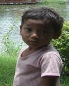

Tao
In order to go into Taoism at all, we must begin by being in the frame of mind in which it can be understood. You cannot force yourself into this frame of mind, anymore than you can smooth disturbed water with your hand. But let’s say that our starting point is that we forget what we know, or think we know, and that we suspend judgment about practically everything, returning to what we were when we were babies when we had not yet learned the names or the language. 

Lao-tzu says,
“The scholar learns something every day, the man of Tao unlearns something every day, until he gets back to non-doing.” Just simply, without comment, without an idea in your head, be aware. What else can you do? You don’t try to be aware; you are. You will find, of course, that you can not stop the commentary going on inside your head, but at least you can regard it as interior noise. Listen to your chattering thoughts as you would listen to the singing of a kettle. We don’t know what it is we are aware of, especially when we take it altogether, and there’s this sense of something going on. I can’t even really say ‘this,’ although I said ‘something going on.’ But that is an idea, a form of words. Obviously I couldn’t say something is going on unless I could say something else isn’t. I know motion by contrast with rest, and while I am aware of motion I am also aware of at rest. So maybe what’s at rest isn’t going and what’s in motion is going, but I won’t use that concept then because in order for it to make sense I have to include both. If I say here it is, that excludes what isn’t, like space. If I say this, it excludes that, and I am reduced to silence. But you can feel what I am talking about. That’s what is called Tao, in Chinese. That’s where we begin.”
Tao means basically “way”, and so “course”; the course of nature. Lao-tzu said the way of the functioning of the Tao is “so of itself”; that is to say it is spontaneous. Watch again what is going on. If you approach it with this wise ignorance, you will see that you are witnessing a happening. In other words, in this primal way of looking at things there is no difference between what you do, on the one hand, and what happens to you on the other. It is all the same process. Just as your thought happens, the car happens outside, and so the clouds and the stars. When a Westerner hears that he thinks this is some sort of fatalism or determinism, but that is because he still preserves in the back of his mind two illusions. One is that what is happening is happening to him, and therefore he is the victim of circumstances. But when you are in primal ignorance there is no you different from what is happening, and therefore it is not happening to you. It is just happening. So is “you”, or what you call you, or what you will later call you. It is part of the happening, and you are part of the universe, although strictly speaking the universe has no parts. We only call certain features of the universe parts. However you can’t disconnect them from the rest without causing them to be not only non-existent, but to never to have existed at all. When a one experiences oneself and the universe happening together, the other illusion one is liable to have is that it is determined in the sense that what is happening now follows necessarily from what happened in the past. But you don’t know anything about that in your primal ignorance. Cause and effect? Why obviously not, because if you are really naive you see the past is the result of what is happening now. It goes backwards into the past, like a wake goes backwards from a ship. All the echoes are disappearing finally, they go away, and away, and away. And it is all starting now. What we call the future is nothing, the great void, and everything comes out of the great void.

If you shut your eyes, and contemplate reality only with your ears, you will find there is a background of silence, and all sounds are coming out of it. They start out of silence. If you close your eyes, and just listen, you will observe the sounds came out of nothing, floated off, and off, stopped being a sonic echo, and became a memory, which is another kind of echo. It is very simple; it all begins now, and therefore it is spontaneous. It isn’t determined; that is a philosophical notion. Nor is it capricious; that’s another philosophical notion. We distinguish between what is orderly and what is random, but of course we don’t really know what randomness is. What is ‘so-of-itself,’ sui generis in Latin, means coming into being spontaneously on its own accord, and that, incidentally, is the real meaning of virgin birth. That is the world, that is the Tao, but perhaps that makes us feel afraid. We may ask, “If all that is happening spontaneously, who’s in charge? I am not in charge, that is pretty obvious, but I hope there is God or somebody looking after all this.” But why should there be someone looking after it, because then there is a new worry that you may not of thought of, which is, “Who takes care of the caretaker’s daughter while the caretaker is busy taking care?” Who guards the guards? Who supervises the police? Who looks after God? You may say “God doesn’t need looking after” Oh? Well, nor does this.
The Tao is a certain kind of order, and this kind of order is not quite what we call order when we arrange everything geometrically in boxes, or in rows. That is a very crude kind of order, but when you look at a plant it is perfectly obvious that the plant has order. We recognize at once that is not a mess, but it is not symmetrical and it is not geometrical looking. The plant looks like a Chinese drawing, because they appreciated this kind of non-symmetrical order so much that it became an integral aspect of their painting. In the Chinese language this is called li, and the character for li means the markings in jade. It also means the grain in wood and the fiber in muscle. We could say, too, that clouds have li, marble has li, the human body has li. We all recognize it, and the artist copies it whether he is a landscape painter, a portrait painter, an abstract painter, or a non-objective painter. They all are trying to express the essence of li. The interesting thing is, that although we all know what it is, there is no way of defining it. Because tao is the course, we can also call li the watercourse, and the patterns of li are also the patterns of flowing water. We see those patterns of flow memorialized, as it were, as sculpture in the grain in wood, which is the flow of sap, in marble, in bones, in muscles. All these things are patterned according to the basic principles of flow. In the patterns of flowing water you will all kind of motifs from Chinese art, immediately recognizable, including the S-curve in the circle of yang-yin. So li means then the order of flow, the wonderful dancing pattern of liquid, because Lao-tzu likens Tao to water:
The great Tao flows everywhere, to the left and to the right, It loves and nourishes all things, but does not lord it over them.
For as he comments elsewhere, water always seeks the lowest level, which men abhor, because we are always trying to play games of one-upmanship, and be on top of each other. But Lao-tzu explains that the top position is the most insecure. Everybody wants to get to the top of the tree, but then if they do the tree will collapse. That is the fallacy of American society. Lao-tzu says the basic position is the most powerful, and this we can see at once in Judo, or in Aikido. These are self-defensive arts where you always get underneath the opponent, so he falls over you if he attacks you. The moment he moves to be aggressive you go either lower than he is, or in a smaller circle than he is moving. And you have spin, if you know Aikido. You are always spinning, and you know how something spinning exercises centrifugal force, and if someone comes into your field of centrifugal force he then gets flung out, but by his own bounce. It is very curious. So, therefore, the watercourse way is the way of Tao. Now, that seems to white Anglo-Saxon Protestants to be lazy, spineless, and altogether passive. I am always being asked when I talk about things, “If people did what you suggest wouldn’t they become terribly passive?” Well, from a superficial point of view I would suggest that a certain amount of passivity would be an excellent corrective for our kind of culture because we are always creating trouble by doing good to other people. We wage wars for other peoples benefit, and attempt to help those living in “underdeveloped” counties, not realizing that in the process we may destroy their way of life. Economies and cultures that have coexisted in ecological balance for thousands of years have been disrupted all around the world, with often disastrous results.